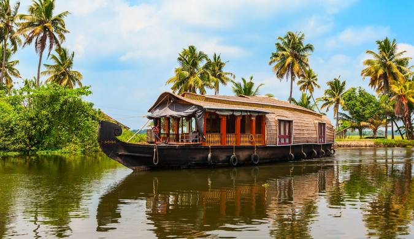
 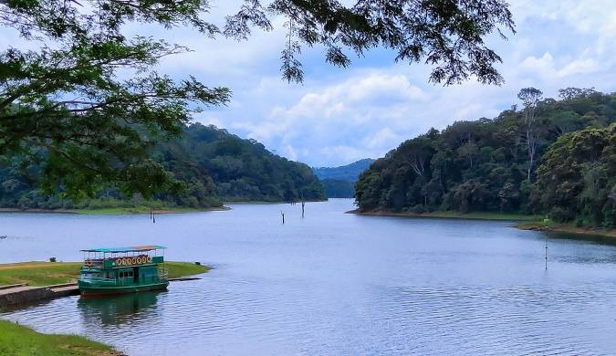
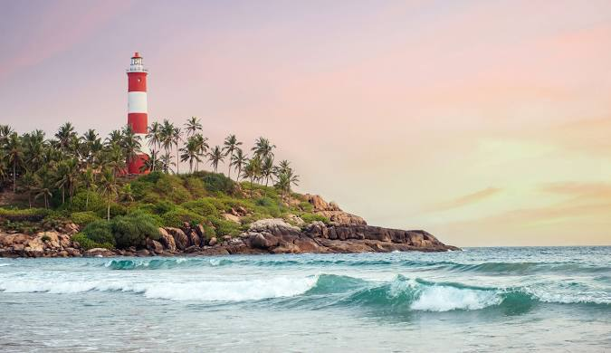
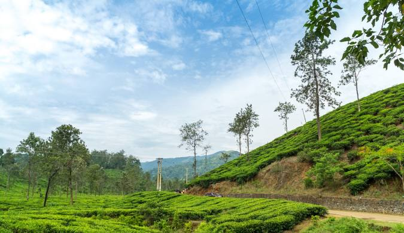
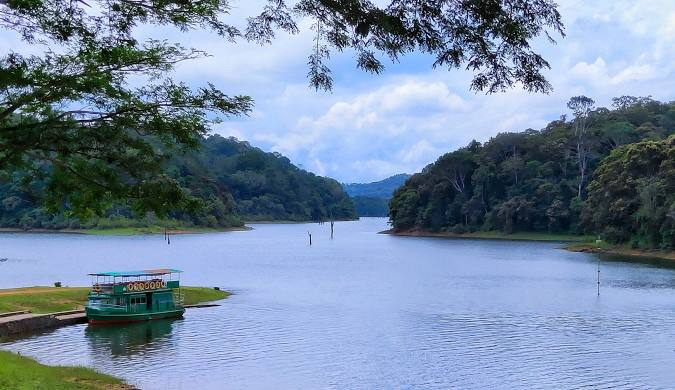
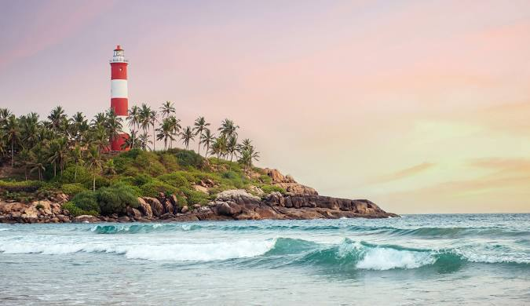
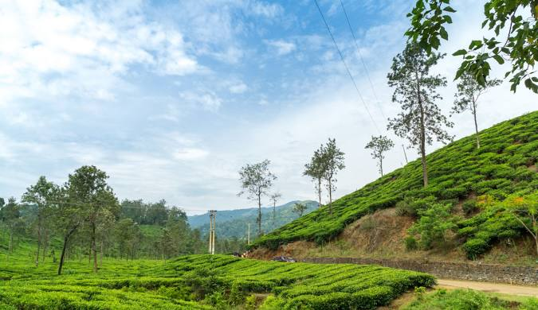
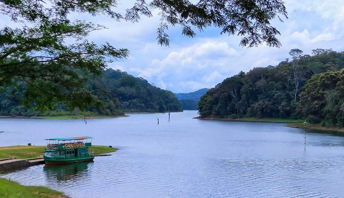
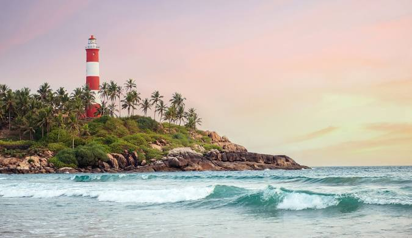
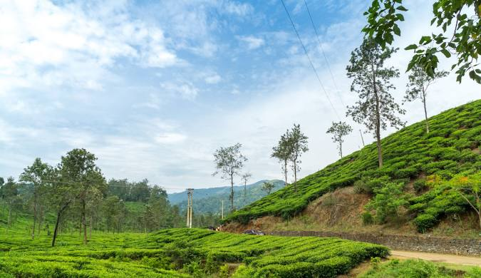
From Ongole to Ernakulam – Sunrise, Chocolate, and Backwaters!
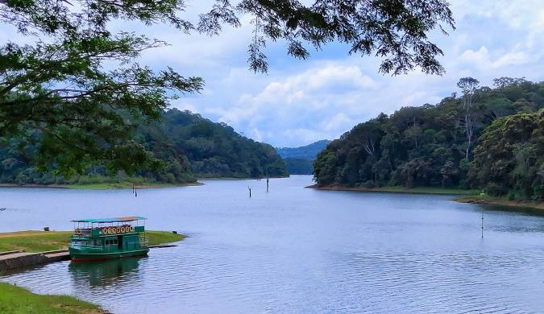
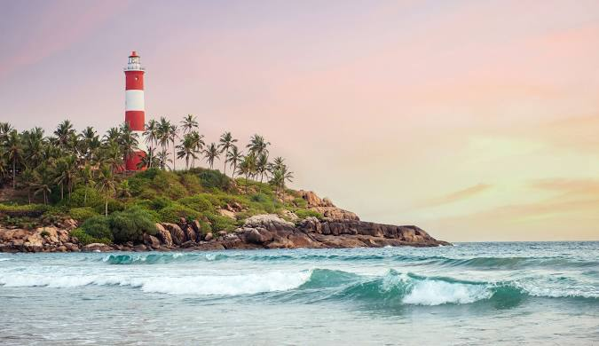
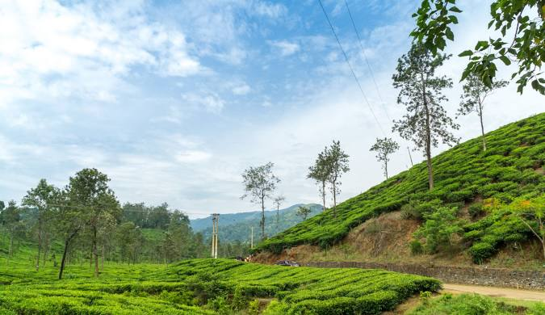
🚆 Board train from Ongole at 5:30 PM to Ernakulam Junction.
🛏️ Overnight train journey.
🚆 Board return train from Ernakulam Junction to Ongole